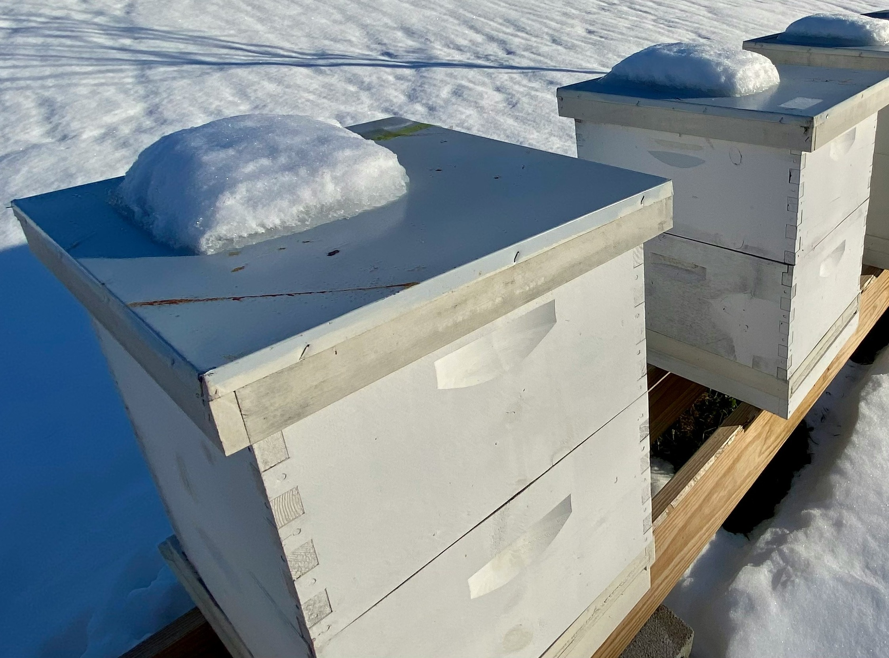

A YEAR IN THE APIARY – DECEMBER
December is the quietest month in the beekeeping calendar, as the bees are largely clustered in their hives, conserving their energy and waiting for the cold winter months to pass. However, there are still some important tasks to consider during this time to ensure hives are ready for winter and to prepare for the upcoming spring.
Regularly monitor the hives to ensure they have enough food stores to last through the winter. Also check the hive entrances for blockages or obstructions, and clear away any debris or dead bees that may have accumulated. It is also important to protect the hives from harsh winter weather by using insulation and wrapping materials to keep them warm and dry. See our page on hive management for winter preparation guidance.
In addition to caring for the hives, use this quiet time to reflect on the past year and plan for the future. You can review your beekeeping notes and records, make any necessary adjustments to management practices, and begin planning for the upcoming season.
While December may seem like a slow month, it is still an important time to tend to the needs of your hives and prepare for the year ahead. With proper care and attention, you can help bees survive the winter and thrive when spring arrives.
Key Tasks to Consider in December
Inspect Hives: Before the winter season fully sets in, heft the hive to ensure they have sufficient food stores for survival during the colder months.
Oxalic Acid Treatment for Varroa Management: Research in the UK indicates that the optimal time to apply oxalic acid is between December 10th and 25th. A commonly used date is the winter solstice (around December 22nd), when the colony is likely broodless. See more on varroa management.
Check on Bees: On warmer days above 10°C, check the bees from the outside to ensure they are active and have enough food, add fondant if needed.
Feed Bees: If honey stores are low, provide fondant to support the bees throughout the winter. Monitor hive weight regularly to prevent starvation.
Prepare for Spring: Use this downtime to plan and prepare for the new season. This includes ordering equipment, assembling new hives, and reviewing your learning goals or notes from the year.
Attend Local Beekeeping Events: Many associations hold workshops, meetings, or conferences in the off-season. These are great opportunities to learn, share experiences, and stay current with beekeeping practices.